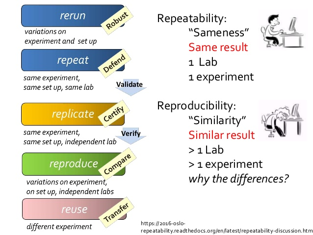

Introduction to Bioinformatic Reproducibility
What is reproducibility?
Obtaining consistent results using the same data, computational methods, steps, code, and parameters.[1]
Reproducibility is NOT the same as “repeatability” and “reusability”, which are also quite important (See the table below).

Defining Terms
There are many definitions of repeatability, replicatability, and reproducibility – some are quite conflicting. For our purposes, we’ll stick with the terms as outlined in the table below.
| Metric | Repeatability | Replicatability | Reproducibility |
|---|---|---|---|
| Operator – Who performs it? | Same lab | Others | Others |
| Input | Same | Same | Same-ish |
| Methods | Same | Same | Same-ish |
| Outcome – Results? | Same | Same | Consistent |
Why do it?
- Scientific responsibility
- Increased acceptance and validation of your work
- Time savings
- Collaborative benefits
Reproducbility Crisis
I’m sure this isn’t news to anyone that has tried to reproduce results from other labs, but there is a reproducibility crisis. The situation is no different for computational analyses.

Barriers to Reproducibility
There are many barriers to reproducbility, highlighted in the figure and table below.

| Factors | Examples |
|---|---|
| Human |
|
| Technical |
|
| Institutional |
|
We can classify the above barriers issues in one or more of the following areas - Organization - Documentation - Automation - Dissemination
In the next section we will learn about some things we can do to overcome these barriers.
Additional Reading
- Ten Simple Rules for Reproducible Computational Research
- Best Practices for Scientific Computing
- Good Enough Practices in Scientific Computing
- A Practical Introduction to Reproducible Computational Workflows Workshop by ISMB/EECB
- Reproducible Bioinformatics blog post by Dave Tang
Citations
- Ten simple rules for writing and sharing computational analyses in Jupyter Notebooks. Rule A, Birmingham A, Zuniga C, Altintas I, Huang SC, Knight R, Moshiri N, Nguyen MH, Rosenthal SB, Pérez F, Rose PW. PLoS Comput Biol. 2019 Jul 25;15(7):e1007007. doi: https://doi.org/10.1371/journal.pcbi.1007007
- Reproducibility, Research Objects, and Reality. Gable C. 2016 Nov 24. https://www.slideshare.net/carolegoble/reproducibility-research-objects-and-reality-leiden-2016
- Baker M. 1,500 scientists lift the lid on reproducibility. Nature. 2016 May 26;533(7604):452-4. doi: https://10.1038/533452a. PMID: 27225100.
- Yang-Min Kim, Jean-Baptiste Poline, Guillaume Dumas, Experimenting with reproducibility: a case study of robustness in bioinformatics, GigaScience, Volume 7, Issue 7, July 2018, giy077, https://doi.org/10.1093/gigascience/giy077